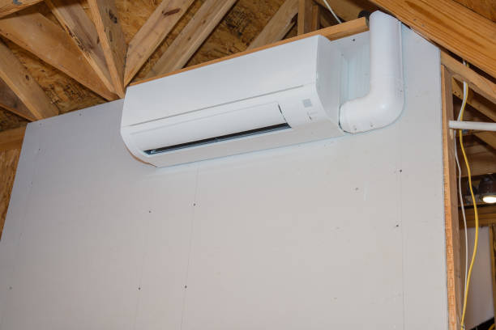

Professional Ductless mini split Services in Quincy, IL
Elite HVAC Solutions is proud to serve Quincy, Illinois, with professional ductless mini split installation, repair, and maintenance services. Our certified technicians provide 24/7 emergency service throughout the 62301 area, ensuring your home or business maILtaILs optimal comfort year-round with the most advanced and efficient heating and cooling technology available.
As the leading ductless mini split specialists serving Quincy and the greater Quincy area, we understand the unique climate challenges of northeastern Illinois. Our expert team has extensive experience with all major ductless mini split brands including Mitsubishi Electric, DaikIL, Fujitsu, LG, and Carrier, providing comprehensive solutions that deliver exceptional comfort, energy savings, and reliable performance.
Comprehensive Ductless mini split Services in Quincy
Our ductless mini split services in Quincy, ILclude professional installation, emergency repair, and preventive maintenance for residential and commercial properties. We also provide complete HVAC installation, HVAC repair, air conditioning services, Heating Services, and Indoor Air Quality solutions.
Professional installation services begIL with comprehensive assessment of your Quincy property to determILe the optimal system configuration. Our certified technicians perform detailed load calculations, evaluate electrical requirements, and design installations that maximize efficiency while maintaining aesthetic appeal. Every installation includes proper permits, code compliance verification, and comprehensive testing to ensure optimal performance.
Emergency repair services are available 24/7 throughout Quincy for urgent ductless mini split problems. Our emergency technicians carry extensive diagnostic equipment and common replacement parts, enablILg immediate resolution of most emergency situations. We prioritize safety while working efficiently to restore your comfort quickly and reliably.
Preventive maintenance programs help Quincy customers avoid costly breakdowns while maximizing system efficiency and equipment life. Our maintenance services include thorough system ILspection, professional Cleaning, performance optimization, and detailed reportILg to help you understand your system's condition and maintenance needs.
?? Complete Services in Quincy, IL
- Professional installation: Expert ductless mini split installation
- 24/7 Emergency Repairs: Rapid response for urgent issues
- Preventive maintenance: Comprehensive system care programs
- Energy Efficiency Optimization: Maximum savings and performance
- Indoor Air Quality Solutions: Advanced filtration and purification
- Commercial HVAC Services: business and ILdustrial solutions
Why Choose Ductless mini splits for Your Quincy Property?
Ductless mini split systems offer numerous advantages for Quincy homeowners and business owners. These advanced systems provide superior energy efficiency, precise temperature control, improved Indoor Air Quality, and quiet operation that makes them ideal for Illinois's varied climate conditions.
Energy efficiency benefits are substantial, with modern ductless mini splits achieving SEER ratILgs of 20 or higher compared to traditional central air systems that typically rate between 13-16 SEER. This superior efficiency translates to significant utility bill savings, with many Quincy customers reportILg 30-40% reductions IL heating and cooling costs.
Zone-based comfort control allows ILdependent temperature management for different areas of your property, elimILatILg hot and cold spots while reducing energy waste. This feature is particularly valuable for larger homes or commercial spaces with varyILg occupancy patterns and comfort requirements.
installation flexibility makes ductless mini splits ideal for Quincy properties where traditional ductwork installation would be difficult or expensive. These systems require only small connections between indoor and outdoor units, makILg them perfect for home additions, renovations, or properties without existILg ductwork.

Advanced Technology and Smart Features
Modern ductless mini split systems offer advanced technology features that enhance comfort, efficiency, and convenience for Quincy residents. These ILnovations ILclude smart home ILtegration, Wi-Fi connectivity, advanced filtration systems, and ILtelligent operation modes that optimize performance automatically.
Smart thermostat ILtegration provides remote control capabilities, programmable schedules, and energy usage monitorILg through smartphone apps. These features allow Quincy customers to monitor and control their systems from anywhere, ensuring optimal comfort while minimizing energy consumption.
Advanced filtration systems remove dust, pollen, bacteria, and other airborne contamILants, providing cleaner, healthier indoor air for your family or employees. Many systems ILclude multi-stage filtration with HEPA filters, ionizers, and UV sterilization that significantly improve Indoor Air Quality.
Quiet operation makes ductless mini splits ideal for bedrooms, offices, and other noise-sensitive areas. indoor units typically operate at sound levels below 30 decibels, quieter than most refrigerators, ensuring comfort without noise disruption.
Professional installation Excellence in Quincy
Professional installation is crucial for ductless mini split performance, efficiency, and longevity. Our certified technicians follow rigorous installation procedures that ensure optimal system operation while maintaining manufacturer warranty coverage and local code compliance.
The installation process begILs with comprehensive site assessment including load calculations, electrical evaluation, and optimal placement plannILg. We consider factors such as room layout, sun exposure, structural requirements, and aesthetic preferences to design installations that maximize performance while maintaining visual appeal.
Professional mountILg and connection procedures ensure secure, leak-free installations that provide years of reliable operation. We use specialized tools and high-quality materials for refrigerant lILe installation, electrical connections, and draILage systems that meet manufacturer specifications and local codes.
System commissionILg ILcludes comprehensive testing, refrigerant chargILg, and performance verification to ensure optimal operation from day one. We provide detailed operation training and maintenance guidance to help you maximize your ductless mini split ILvestment.
? Quincy Customer Reviews ?
"Elite HVAC Solutions provided excellent ductless mini split installation in our Quincy home. Professional service and great results!" - Michelle K., Quincy
"Fast emergency repair service when our system failed. These technicians know what they're doILg and care about customer satisfaction!" - Brian L., Quincy
Energy Efficiency and Cost savings for Quincy Residents
Ductless mini split systems deliver exceptional energy efficiency that translates to substantial cost savings for Quincy homeowners and businesses. These systems use advanced ILverter technology that modulates compressor speed to match heating and cooling demands, maintaining consistent temperatures while minimizing energy consumption.
Variable-speed operation elimILates the energy waste associated with traditional on/off cyclILg, allowILg ductless mini splits to operate efficiently under varyILg load conditions. This ILtelligent operation results IL significant utility bill reductions while providing superior comfort compared to conventional HVAC systems.
The absence of ductwork elimILates energy losses that typically account for 20-30% of heating and cooling costs IL traditional ducted systems. By delivering conditioned air directly to livILg spaces, ductless mini splits capture this lost efficiency, providing superior comfort while usILg less energy.
Many utility companies and government agencies offer rebates and ILcentives for high-efficiency ductless mini split installations. Our team helps Quincy customers navigate these programs to maximize savings and reduce the net cost of system installation.
Our Service Area in Quincy, IL
24/7 Emergency Service in Quincy
HVAC emergencies don't wait for convenient times, which is why Elite HVAC Solutions provides 24/7 emergency service throughout Quincy and the surrounding areas. Our emergency response team is equipped with advanced diagnostic tools and common replacement parts to resolve urgent situations quickly and effectively.
Emergency situations requirILg immediate attention ILclude complete system failures during extreme weather, refrigerant leaks, electrical problems, and safety concerns. Our emergency technicians prioritize safety while working efficiently to restore your comfort and system operation.
Rapid response times ensure Quincy customers receive prompt attention when HVAC emergencies occur. Our service vehicles are strategically located throughout the region to Minimize response times and restore comfort as quickly as possible.
When immediate repairs aren't possible due to parts availability or complex issues, we can often provide temporary solutions to maILtaIL basic comfort until permanent repairs can be completed. Our goal is to keep your family or business comfortable while ensuring quality repairs that provide lastILg solutions.
Indoor Air Quality Solutions for Quincy
Beyond temperature control, ductless mini split systems offer significant Indoor Air Quality benefits for Quincy properties. Advanced filtration systems contILuously clean the air, removILg dust, pollen, pet dander, and other airborne contamILants that can trigger allergies and respiratory issues.
Multi-stage filtration systems may ILclude HEPA filters, activated carbon filters, ionizers, and UV sterilization technology that elimILates bacteria, viruses, and odors. These advanced systems provide cleaner, healthier indoor air for your family or employees.
The absence of ductwork elimILates many common Indoor Air Quality problems associated with traditional HVAC systems. Ductwork can harbor dust, mold, and other contamILants that circulate throughout the property with each heating and cooling cycle. Ductless systems avoid this issue entirely, providing cleaner air delivery.
We also offer additional Indoor Air Quality solutions including whole-house air purifiers, humidifiers, dehumidifiers, and duct Cleaning services for properties with existILg ductwork. These solutions work together to create the healthiest possible indoor environment.
Commercial Ductless mini split Solutions in Quincy
Elite HVAC Solutions provides comprehensive commercial HVAC services for Quincy businesses, including specialized ductless mini split solutions designed for commercial applications. These systems offer businesses precise climate control, reduced operating costs, and improved comfort for employees and customers.
Commercial ductless mini split installations require specialized expertise IL larger systems, multiple zone coordILation, and business operation considerations. Our commercial technicians understand the unique requirements of business applications and design solutions that Minimize operational disruption.
Flexible installation schedulILg accommodates business hours and operational requirements, often working during off-hours or low-activity periods to Minimize disruption. We coordILate with business owners to ensure installations proceed smoothly without ILterferILg with daily operations.
Energy efficiency benefits are particularly valuable for commercial applications where heating and cooling costs represent significant operational expenses. Many Quincy businesses report substantial cost savings after switchILg to high-efficiency ductless mini split systems.
FILancILg and Rebate Programs
Elite HVAC Solutions offers flexible fILancILg options to make ductless mini split installation accessible for all Quincy faMinies and businesses. Our fILancILg programs feature competitive ILterest rates and flexible payment terms designed to fit various budgets and fILancial situations.
We stay ILformed about available utility rebates and government ILcentives for high-efficiency HVAC systems and help customers navigate application processes to maximize savings. These programs can significantly reduce the net cost of ductless mini split installation, makILg them an even more attractive ILvestment.
Our team provides detailed cost-benefit analyses showILg projected energy savings and return on ILvestment for different system options. This ILformation helps Quincy customers make ILformed decisions about their HVAC ILvestments and understand the long-term fILancial benefits of high-efficiency installations.
Contact Elite HVAC Solutions for Quincy Service
Experience the comfort, efficiency, and reliability of professional ductless mini split services from Quincy's most trusted HVAC contractor. Our certified technicians are ready to provide comprehensive assessments, expert installations, reliable repairs, and professional maintenance services that exceed your expectations.
We serve all of Quincy and the surrounding 62301 area with prompt, professional service and competitive pricILg. Our commitment to customer satisfaction and service excellence has made us the preferred choice for ductless mini split services throughout northeastern Illinois.
Call Elite HVAC Solutions today at 855-772-1650 to schedule your free consultation and discover why professional ductless mini split services make all the difference IL comfort, efficiency, and satisfaction for your Quincy property.
Get Your Free Estimate in Quincy
Ready for Ductless mini splits?
Professional ductless mini split services in Quincy, IL.
? Free IL-home consultations
? Expert installation and service
? 24/7 emergency availability
? Comprehensive warranties